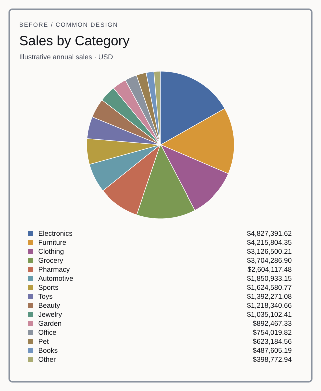
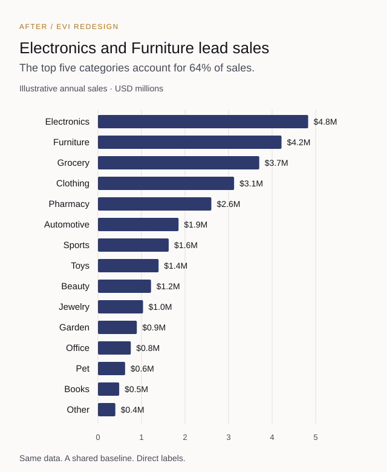

01 · Sales reporting
Fifteen categories in a pie chart
Business questionWhich categories generate the most sales, and how far apart are they?
Finding Electronics and Furniture lead sales; the top five categories contribute 64% of revenue.
Before

After
